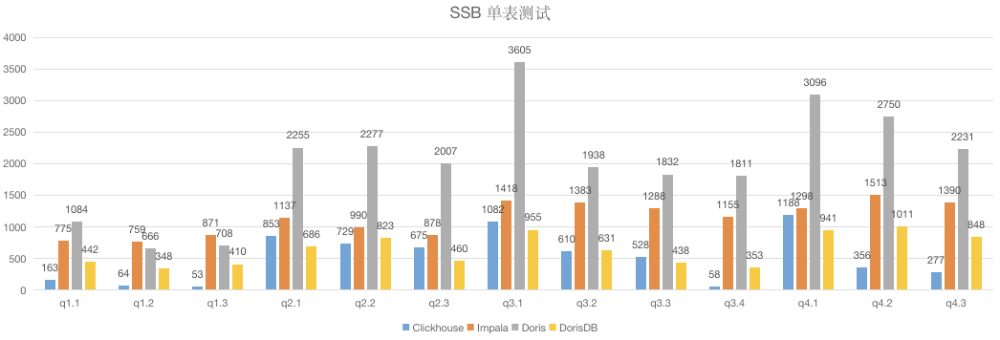
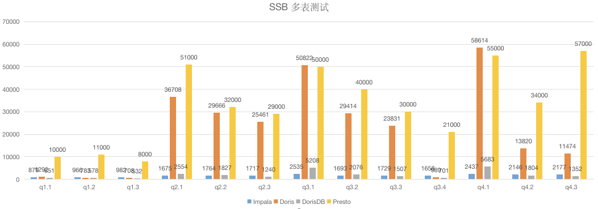

OLAP Engine Benchmark Comparison


1. Test data
SSB (Star Schema Benchmark)
SSB
SSB simplified TPC-H's snowflake schema into a star schema, and changed the benchmark query from TPC-H's complex Ad-Hoc query to an OLAP query with a more fixed structure.
| table | comment |
|---|---|
| lineorder | order form |
| customer | User table |
| supplier | supplier table |
| part | parts list |
| dates | date table |
| lineorder_flat | Order wide table |
Test SQL: 13
Data generation
https://github.com/vadimtk/ssb-dbgen
dbgen - s 100 - T a
Data size
| TOTAL | lineorder | customer | supplier | part | dates | lineorder_flat | |
|---|---|---|---|---|---|---|---|
| Rows | 600 million 600,038,145 | 3,000,000 | 200,000 | 140,000 | 2,556 | 600 million | |
| Size(csv) | 68G | 67G | 317M | 19M | 135M | 270K | |
| Size(parquet+snappy) | 17G | 16G | 117M | 7M | 15M | 30K | 42G |
| Size(doris) | 16G | 15G | 138M | 9M | 12M | 33K | 59G |
| Size(dorisdb) | 16G | 15G | 138M | 9M | 12M | 33K | 59G |
| Size(clickhouse) | 18G | 18G | 120M | 8M | 25M |
test database
| Component | DB | Comment |
|---|---|---|
| Hive | test_ssb_100_p | csv |
| Hive | test_ssb_100_p | parquet+snappy |
| Clickhouse | ssb_100 | |
| DorisDB | ssb_100 | |
| Doris | ssb_100 |
2. Test engine
| Engine | Version | Resource | Host | Cmd |
|---|---|---|---|---|
| Impala | 3.1.1 | (2G+6G)*10 | impala-shell - i $server:21000 - d test_ssb_100_p | |
| Presto | 0.231 | 12G*3 | /data/soft/presto --server $server:7080 --catalog hive --schema test_ssb_100_p | |
| ClickHouse | 20.8.7.15 | 32G*2 | /104 | clickhouse-client - m - h $server --port 9000 --password default - d ssb_100 |
| Doris | 0.14.0 | 32G*4 | mysql - h$server - P9030 - uroot - proot ssb_100 | |
| DorisDB | 1.15.0 | 32G*4 | mysql - h$server - P9031 - uroot - proot ssb_100 |
Three test results
Multi-table join test
Unit: millisecond
| Query | Impala | Doris0.14 | Doris1.0 | DorisDB | Presto |
|---|---|---|---|---|---|
| q1.1 | 879 | 714 | 230 | 417 | 10000 |
| q1.2 | 966 | 517 | 70 | 325 | 11000 |
| q1.3 | 982 | 522 | 40 | 330 | 8000 |
| q2.1 | 1675 | 5754 | 5100 | 657 | 51000 |
| q2.2 | 1764 | 4423 | 4200 | 514 | 32000 |
| q2.3 | 1717 | 4126 | 4090 | 449 | 29000 |
| q3.1 | 2535 | 6550 | 6660 | 1101 | 50000 |
| q3.2 | 1693 | 4934 | 6930 | 590 | 40000 |
| q3.3 | 1729 | 4303 | 4110 | 539 | 30000 |
| q3.4 | 1658 | 589 | 170 | 499 | 21000 |
| q4.1 | 2437 | 8498 | 7980 | 1359 | 55000 |
| q4.2 | 2146 | 3411 | 2690 | 1017 | 34000 |
| q4.3 | 2177 | 2790 | 2220 | 828 | 57000 |
| SCORE | 0 | 0 | 4 | 9 | 0 |
| TOTAL | 22,358 | 47,131 | 44,430 | 8,625 | 428,000 |
in conclusion
- The fastest overall query time is DorisDB
- Among the 13 queries, 9 are fastest with DorisDB and 4 are with Doris1.0
ps
- Impala and Presto underlying query Parquet+Snappy
- ClickHouse multi-table query requires SQL modification, so we will not participate.
- The overall time consumption of doris is 5-6 times that of dorisdb
Single table test
Unit: millisecond
| Query | Clickhouse | Impala | Doris0.14 | Doris1.0 | DorisDB |
|---|---|---|---|---|---|
| q1.1 | 163 | 775 | 509 | 250 | 254 |
| q1.2 | 64 | 759 | 382 | 70 | 204 |
| q1.3 | 53 | 871 | 408 | 200 | 247 |
| q2.1 | 853 | 1137 | 1232 | 670 | 376 |
| q2.2 | 729 | 990 | 1321 | 630 | 465 |
| q2.3 | 675 | 878 | 1161 | 460 | 269 |
| q3.1 | 1082 | 1418 | 1830 | 780 | 576 |
| q3.2 | 610 | 1383 | 1483 | 750 | 383 |
| q3.3 | 528 | 1288 | 1174 | 430 | 276 |
| q3.4 | 58 | 1155 | 1111 | 50 | 244 |
| q4.1 | 1188 | 1298 | 1986 | 890 | 531 |
| q4.2 | 356 | 1513 | 1631 | 280 | 561 |
| q4.3 | 277 | 1390 | 1413 | 230 | 483 |
| SCORE | 3 | 0 | 0 | 3 | 7 |
| TOTAL | 6,636 | 14,855 | 15,641 | 5,690 | 4,869 |
in conclusion
- The fastest overall query time is DorisDB
- Among the 13 queries, the fastest 3 queries are ClickHouse, 3 queries are Doris1.0, and 7 queries are DorisDB
- The overall time consumption of doris1.0 has caught up with dorisdb
ps
- The SQL script cannot be run under presto due to various syntax incompatibilities.